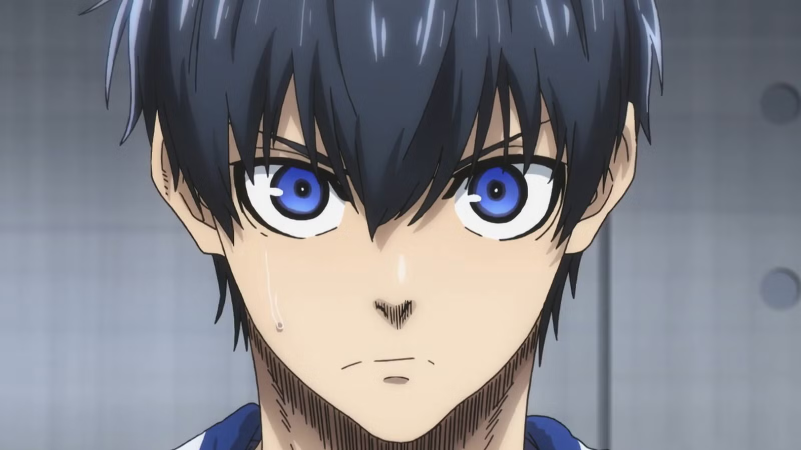

I first became interested in coding in fourth grade because I wanted to make my own games. That curiosity is still at the center of how I learn.
01 Hello, world
I make ideas
click.
I’m Leo, a computer engineer exploring the playful space where creative coding meets thoughtful design.
Take a look around
MOVE YOUR CURSOR
code + curiosity
Creative coding✦Interaction design✦
Computer engineering✦Curious experiments✦
Creative coding✦Interaction design✦
Computer engineering✦Curious experiments✦
02 About me
Engineer brain.
Designer heart.

My name is Leo. I’m a computer engineer who loves using code as a creative material—not only to solve problems, but to make things that feel surprising, intuitive, and alive.
I’m currently building my practice, experimenting with new ideas, and shaping the first projects that will live here.
CURRENT QUESTION
“What happens if I try it?”
03 The human behind the pixels
A little playful.
A lot curious.
HI! ✦
PLAYER
1 ~ ~ ~
1 ~ ~ ~
CURRENT MODE
Try it.
Learn from it.
Try again.
Learn from it.
Try again.
Want to know me beyond the résumé?
Pick a question and I’ll give you a clue.
Choose one above ↗
04 Experience
My coding
journey.
I’ve used JavaScript, Python, and other coding platforms to experiment and build. I also published my own Roblox obby game.
When one idea needs many scripts to work, I break the problem down and keep testing. I enjoy both teamwork and focused solo building.
THE BIGGER PICTURE
Four parts of
Four parts of
my process.
Where it started
My first game was a turret shooter where players had to dodge bullets to survive.
Why I build
I love the process of creating different structures and turning creative ideas into something playable.
How I learn
When I get stuck, I ask a teacher for help or search online until I understand the problem.
What’s next
I want to make a bigger, more popular Roblox obby that people enjoy exploring.
05 Skills & interests
Things I like
to make with.
01
Code
Building reliable systems and playful digital experiments.
EXPLORE ↗ 02Creative coding
Using algorithms, motion, and interaction as a creative medium.
EXPLORE ↗ 03Design
Shaping clear, useful experiences with personality.
EXPLORE ↗ 04Engineering
Understanding how ideas work all the way down.
EXPLORE ↗06 Selected projects
Good things are
in the works.
WORK IN PROGRESS
The first project is cooking.
I’m exploring, prototyping, and making plenty of happy mistakes. This space will soon hold a collection of creative coding work.
PROGRESS37%